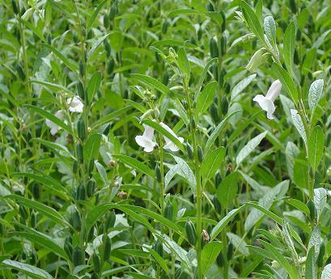
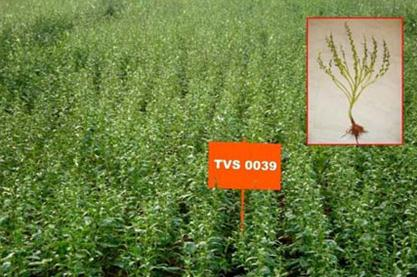

SESAME (Sesamum indicum)

I. SEASON AND VARIETIES
| Zone/ District/Season |
Sowing Month |
Varieties |
| I.Western Zone(Irrigated) |
| Coimbatore, Thiruppur, Erode |
|
| Masipattam |
Feb- March |
TMV 3, TMV 4, TMV 6, TMV 7, CO 1,
VRI (SV) 1, SVPR 1, VRI (SV) 2 |
| Western Zone (Rainfed) |
| Coimbatore,Thiruppur, Erode, Dindigul |
| Anippattam |
June- July |
CO 1, TMV 3,TMV 7 |
| Theni |
| Karthigai |
Nov- Dec |
CO 1, TMV 3, TMV 5, TMV 7, SVPR 1,
VRI(SV) 2 |
| II.Southern Zone(Irrigated) |
| Thirunelveli, Karur |
| Chithiraipattam |
Apr- May |
TMV 3, TMV 4, TMV 6, TMV 7, CO 1,
VRI (SV) 1, SVPR 1, VRI (SV) 2 |
| Pudukkottai |
| Margazhi |
Dec- Jan |
TMV 3, TMV 4, TMV 6, TMV 7, CO 1,
VRI (SV) 1, SVPR 1, VRI (SV) 2 |
| Southern Zone (Rainfed) |
| Madurai |
| Anipattam |
June-July |
CO 1, TMV 3,TMV 7 |
| Virudhunagar, Pudukkottai, |
| Adippattam |
July-Aug |
CO 1, TMV 3,TMV 7 |
| Karur |
| Purattasipattam |
Sep- Oct |
CO 1, TMV 3, TMV 5, TMV 7, SVPR 1,
VRI(SV) 2 |
| Ramanathapuram, Sivagangai, Thirunelveli, Thoothukudi |
| Karthigaipattam |
Nov- Dec |
CO 1, TMV 3, TMV 5, TMV 7, SVPR 1,
VRI(SV) 2 |
| III.North EasternZone (Irrigated) |
| Kancheepuram, Cuddalore, Vellore |
| Margazhipattam |
Dec- Jan |
CO 1, TMV 3, TMV 5, TMV 7, SVPR 1,
VRI(SV) 2 |
| Thiruvannamalai |
| Masipattam |
Feb- March |
TMV 3, TMV 4, TMV 6, TMV 7, CO 1,
VRI (SV) 1, SVPR 1, VRI (SV) 2 |
| Villupuram |
| Chithiraipattam |
Apr- May |
TMV 3, TMV 4, TMV 6, TMV 7, CO 1,
VRI (SV) 1, SVPR 1, VRI (SV) 2 |
| Thiruvallur |
| Anipattam |
June-July |
CO 1, TMV 3,TMV 7 |
| North Eastern Zone(Rainfed) |
| Vellore, Thiruvannamalai |
| Anippattam |
June-July |
CO 1, TMV 3,TMV 7 |
| Kancheepuram, Cuddalore |
| Adippattam |
July-Aug |
CO 1, TMV 3,TMV 7 |
| Thiruvallur |
| Purattasipattam |
Sep- Oct |
CO 1, TMV 3, TMV 5, TMV 7, SVPR 1,
VRI(SV) 2 |
| Villupuram |
| Karthigaipattam |
Nov- Dec |
CO 1, TMV 3, TMV 5, TMV 7, SVPR 1,
VRI(SV) 2 |
| IV.North Western Zone (Irrigated) |
| Namakkal |
| Margazhipattam |
Dec- Jan |
TMV 3, TMV 4, TMV 6, TMV 7, CO 1, VRI (SV) 1, SVPR 1, VRI (SV) 2 |
| Salem, Perambalur, Ariyalur |
| Masipattam |
Feb- March |
TMV 3, TMV 4, TMV 6, TMV 7, CO 1,
VRI (SV) 1, SVPR 1, VRI (SV) 2 |
| North Western Zone(Rainfed) |
| Salem,Namakkal, Dharmapuri, Krishnagiri |
| Anippattam |
June-July |
CO 1, TMV 3,TMV 7 |
| Perambalur, Ariyalur |
| Adippattam |
July-Aug |
CO 1, TMV 3,TMV 7 |
| V.Delta Zone (Irrigated) |
| Thanjavur, Thiruchirapalli |
| Masipattam |
Feb- March |
TMV 3, TMV 4, TMV 6, TMV 7, CO 1,
VRI (SV) 1, SVPR 1, VRI (SV) 2 |
| Thiruvarur |
| Chithiraipattam |
Apr- May |
TMV 3, TMV 4, TMV 6, TMV 7, CO 1,
VRI (SV) 1, SVPR 1, VRI (SV) 2 |
| Delta Zone (Rainfed) |
| Thanjavur, Thiruvarur, Nagapattinam |
| Thaippattam |
Jan- Feb |
VRI(SV) 1 |
| Thiruchirapalli |
| Purattasipattam |
Sep- Oct |
CO 1, TMV 3, TMV 5, TMV 7, SVPR 1,
VRI(SV) 2 |
DESCRIPTION OF SESAME VARIETIES
| Particulars |
CO 1 |
TMV 3 |
TMV 4 |
TMV 5 |
TMV 6 |
| Parentage |
Derivative of (TMV 3 X SI 1878) X SI 1878 |
Derivative of South Arcot local X Malabar |
Pureline selection from Sattur local |
Pureline selection from Srivaikundam local |
Pureline selection from Andhra Pradesh Variety |
| Duration (days) |
85-90 |
80-85 |
85-90 |
80-85 |
85-90 |
| Average Yield (kg/ha) |
| Rainfed |
450-650 |
400-650 |
- |
450-650 |
|
| Irrigated |
750-790 |
625-750 |
700-850 |
- |
700-950 |
| Oil content % |
|
51 |
50 |
51 |
54 |
| Habit |
Erect with profuse branching and short internodes on the main stem |
Bushy with profuse branching |
Bushy with profuse branching |
Erect with moderate branching |
Erect with moderate branching |
| Capsules |
4 loculed |
4 loculed |
4 loculed |
4 loculed |
4 loculed |
| Seeds |
Intense dark brown almost black |
Dark brown |
Brown |
Brown |
Brown |
| Particulars |
TMV 7 |
VRI(SV) 1 |
VRI(SV) 2 |
SVPR 1 |
| Parentage |
Derivative of SI 250 X ES 22 |
Pureline selection from Tirukattupalli local |
Derivative of VS 9003 X TMV 6 |
Pureline selection from Western Ghat |
| Duration (days) |
80-85 |
70-75 |
80-85 |
75-80 |
| Average Yield (kg/ha) |
| Rainfed |
850 |
450-650 |
650-700 |
600 |
| Irrigated |
920 |
650-900 |
700-750 |
800 |
| Oil content % |
50 |
51 |
51.9 |
53.8 |
| Habit |
Erect, indeterminate with Profuse branching |
Erect with moderate branching |
Profuse branching |
Erect with moderate branching |
| Capsules |
4 loculed |
4 loculed |
4 loculed |
4 loculed |
| Seeds |
Brown |
Brown |
Reddish brown |
White |

TMV (SV) 7
CROP MANAGEMENT
1. FIELD PREPARATION
- Plough the field with tractor twice or with mould board plough thrice or five times with a country plough.
- Break the clods in between ploughings and bring the soil to a fine tilth to facilitate quick germination as the seeds are small.
- Chiselling for soils with hard pan: Chisel the soils having hard pan formation at shallow depth with chisel plough first at 0.5 m interval in one direction and then in the direction perpendicular to the previous one once in three years. Apply 12.5t FYM/composted coir pith besides chiselling.
- For irrigated gingelly, form beds of size 10 m2 or 20 m2 depending upon the availability, inflow of water and slope of the land. Level the beds perfectly without any depressions to prevent water stagnation, which will affect the germination adversely.
- In rice fallows, field is ploughed once with optimum moisture, seeds are sown immediately and covered with one more ploughing.
2. APPLICATION OF FERTILIZERS
- Spread FYM or composted coir pith or compost @ 12.5 t/ha evenly on the unploughed field and plough it in.
- If the manure is not applied before commencement of ploughing, spread 12.5 t/ha of FYM or compost evenly on the field before the last ploughing and incorporate in the soil.
- If soil tests are not available, follow the blanket recommendations. Rainfed: Apply 23:13:13 kg NPK/ha or 17:13:13 kg NPK/ ha + 3 packets of Azospirillum (600 g/ha) and 3 packets (600 g/ha) of Phosphobacteria or 6 packets of Azophos(1200 g/ha). Irrigated: Apply 35:23:23 kg NPK/ha or 21:23:23 kg NPK/ha + 3 packets of Azospirillum (600 g/ha) and 3 packets(600 g/ha) of Phosphobacteria or 6 packets of Azophos(1200 g/ha)
- Apply full dose of N, P and K basally. Add 5 kg of Manganese sulphate per hectare. Apply 50% of the recommended P 2O 5and K 2O with full recommended dose of N to irrigated gingelly raised after groundnut fertilized with 100% of recommended NPK. Open furrows to a depth of 5 cm and 30 cm apart and place the fertilizer mixture along the furrows and cover to a depth of 3 cm with soil before sowing.
- If furrow application is not done, broadcast the fertilizer mixture evenly on the beds before sowing.
- Apply TNAU MN mixture @ 7.5 kg ha-1 as enriched FYM for rainfed sesame and TNAU MN mixture @ 12.5 kg ha-1 as enriched FYM for irrigated sesame. (Prepare enriched FYM at 1:10 ratio of MN mixture & FYM ; mix at friable moisture &incubate for one month in shade)
3. APPLICATION OF AZOSPIRILLUM
25% of the N can be substituted by 3 packets of Azospirillum (600 g/ha) and 3 packets (600 g/ha) of Phosphobacteria or 6 packets of Azophos (1200 g/ha) by seed treatment and 10 packets of Azospirillum (2000 g/ha) and 10 packets (2000 g/ha) of Phosphobacteria or 20 packets of Azophos(4000 g/ha)as soil application.
4. NUTRITIONAL DISORDERS
Manganese deficiency : Leaves develop interveinal chlorosis, chlorotic tissue, later develop light brown or husk coloured necrotic lesions. Mix 5 kg / ha MnSO4 with 45 kg of soil and broadcost evely in the beds after sowing.
Zinc deficiency: Middle leaves develop chlorosis in the interveinal areas and necrosis along the apical leaf margins. Mix 5 kg/ha of Zinc sulphate with 45 kg of soil and broadcast evenly in the beds after sowing.
Note: Do not incorporate the micronutrient in the soil.
5. SEED RATE
Adopt a seed rate of 5 kg/ha.
6. SPACING
Give a spacing of 30 cm between rows and 30 cm between plants. b) For rice fallows, seeds are broadcasted and thinned to maintain 11 plants/m 2.
7. QUALITY OF SEEDS
Select mature, good quality seeds free from pest and fungal damage.
8. SEED TREATMENT
Treat the seed with Trichoderma@ 4g/kg. This can be done just before sowing. SUCH SEEDS SHOULD NOT BE TREATED WITH FUNGICIDES or treat the seed with Thiram 4 g or Carbendazim at 2 g/kg of seeds before sowing.
9. SOWING
- Sow the seeds preferably in lines.
- Mix the seeds with four times its volume of dry sand and drop the mixture evenly along the furrows in which fertilizers are applied.
- Sow the seeds to a depth of 3 cm and cover with soil.
- The optimum time of sowing for VRI (SV) 1 sesame is second fortnight of February to first fortnight of March under summer irrigated conditions.
10. WATER MANAGEMENT
- Irrigate at sowing and give life irrigation 7 days after sowing depending on the soil and climatic condition and allow excess water to percolate.
- Give one pre-flowering irrigation (25 days): One at flowering and one or two at pod setting. An irrigation at flowering period is critical.
NOTE: The critical stage for moisture requirement is the flowering phase i.e, between 35th to 45th days of sowing. During the maturity phase, moisture status should be low. If more water is given during this phase, maturity of seeds is affected and filling up of the capsules will be poor. Therefore, stop irrigation after 65 days of sowing.
11. THINNING
Thin out the seedlings to a spacing of 15 cm between the plants on the 15th day of sowing and 30 cm on 30th day of sowing. This operation is very important for the crop in order to induce basal branches.
12. WEED MANAGEMENT
- Apply, PE application of Pendimethalin 3.3 l/ha followed by me hand weeding on 25th DAS
- For irrigated sesame, apply PE alachlor @ 1.5 kg (or) Metolachlor @ 1.0 kg ha-1 followed by one hand weeding on 25th DAS
13. HARVESTING
a. Decide when to harvest
- Observe the crop, considering the average duration of the crop.
- Twenty five per cent of the leaves from the bottom are shed and the top leaves loose their colour and turn yellow at maturity.
- The colour of the stem turns yellow.
- The colour of the capsules turn yellow upto the middle.
- Harvest before the bottom capsules turn brown.
- Examine the 10th capsule from the bottom by opening. If the seeds attained the full color of the variety harvest may be taken up.
- If harvest is delayed/ the capsules will dehisce resulting in yield reduction.
b. Harvest
- Pull out the plants from the bottom.
- Stack in the open, one over the other in a circle with the stems pointing out and the top portion pointing inside.
- Cover the top with straw, so that humidity and temperature increases.
- Cure like this for 3 days, shake the plants. About 75 per cent of the seeds will fall off.
- Dry the plants for one more day and again shake the plants. All the mature seeds will fall off.
- Winnow the seeds and dry in the sun for 3 days. Stir once in 3 hours to give uniform drying.
- Collect the seeds and store in gunnies.
|